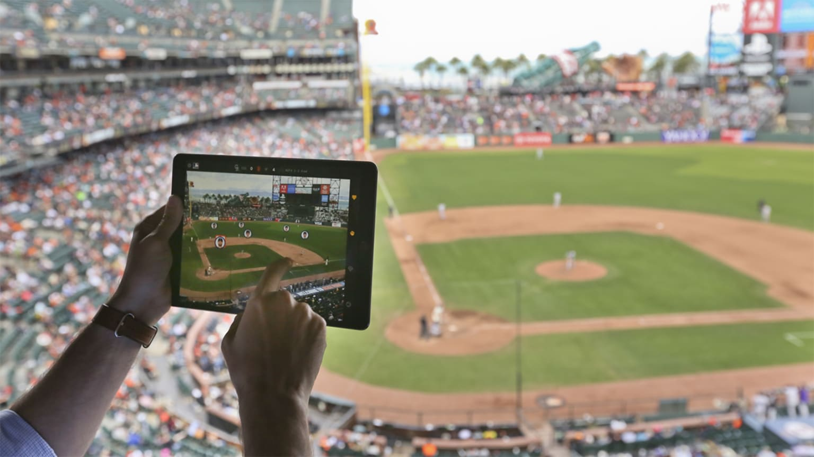

Computer Vision
in Baseball
For my senior capstone project I was tasked with writing a research paper on a topic of my choice. As an avid baseball fan, I decided to look into how cameras and technology have changed the game of baseball for the better.

Abstract
Computer vision is being used in sports to gain competitive advantages and enhance fan experiences. Major League Baseball is incorporating new computer vision technologies to its Statcast system with the goal of bringing more analytical data to the game. This paper analyzes the new technologies brought in, how they obtain data through cameras and algorithms, and what the data is being used for. Technical aspects discussed include the creation of point clouds by using the ICP algorithm, Kalman filtering, and position tracking using cameras. Due to the multitude of new data brought in with these techniques, players are getting much better and competitiveness is rising. To conclude this paper, we will look specifically at how pitchers are using this data to get better and how Major League Baseball is using this data to create better fan experiences for the future.